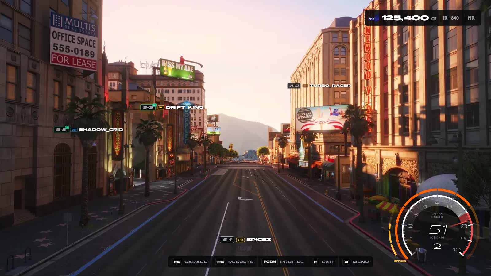

OPEN SOURCE · GPL v3 · FIVEM
SPiceZ-Core is a modular, open-source FiveM framework built purely for competitive street racing — no jobs, no housing, no bloat. Deploy a full racing server with one txAdmin recipe.
Built by the racer,
for the racer, and
to the racer.
SPiceZ-Core redefines the street
racing experience with absolute
precision. No compromises. No
bloat. Just the race.
WHAT'S INSIDE
Every feature is its own resource with its own repository. Enable, disable, or replace any module independently — they talk only through events and exports.
Queue, track vote, warmup, staging, 3-2-1 countdown, checkpoints, sector timing, finish windows and results — all measured and decided on the server. Clients never decide outcomes.
The recipe installs every dependency and module, writes a production server.cfg, and the database schema applies itself on first boot via tracked migrations.
spz-physics replaces GTA's arcade throttle with torque curves, gear ratios, clutch simulation, rev limiters and engine braking — a CHASER-style driving feel.
XP, driver ranks, safety rating and iRating modelled after sim racing. License tiers gate car classes — earn your way into faster machinery.
Every race and time-trial lap is captured automatically. Your best line paints onto the road — green where you were on throttle, red where you braked.
Pick a nation and a unique race number at character creation. Both follow you everywhere — nametags, live standings, leaderboards.
Solo time trials in isolated routing buckets, per-track sector bests, speed-camera records, and a leaderboard covering standings, classes and history.
spz-hud draws every screen on one layer: one look, one owner of the mouse, no overlaps. Players move and resize the HUD with /hudedit, and the key strip always shows their own bindings.
ONE INTERFACE
One layer draws every screen: freeroam, racing, minigames, spectating and every menu. Players place it themselves and pick an analogue or digital speedometer.

Racing servers shouldn't be hard to build.
Most FiveM frameworks are general-purpose RP cores with racing bolted on. SPiceZ-Core inverts that: racing is the whole point. A free, open framework that anyone can deploy in minutes. Seasonal competition, community-built track packs, and a racing ecosystem where no server owner ever has to start from scratch again.
DEVELOPER & OWNER
One recipe URL in txAdmin. Everything else is automatic.